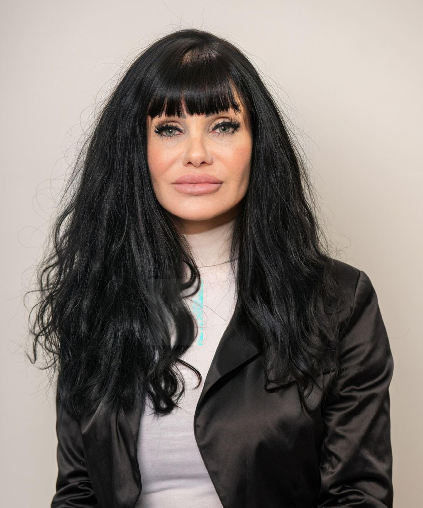

Кандидат за народен представител
Учител и образователен мениджър от Димитровград. Тридесет години в класната стая – сега кандидат за реална промяна в парламента.
Мариела Василева Петропулу е родена на 10 юни 1974 г. в гр. Димитровград. Учител по английски език с над 20 години стаж в системата на образованието. Завършва Английска филология в ПУ „Паисий Хилендарски", Пловдив, и Начален учител по английски език във Великотърновски университет „Св. св. Кирил и Методий". През 2011 г. се дипломира като магистър по Публичен и образователен мениджмънт в Тракийски университет – Стара Загора, а през 2018 г. придобива втора магистратура по Методика на преподаване по английски език отново в ПУ „Паисий Хилендарски".
Преподава в ОУ „Пенчо Славейков" (2000–2010) и СУ „Любен Каравелов" (2011–до момента), Димитровград. Ръководи проект „Училище на бъдещето", координира участието на СУ „Любен Каравелов" в Асоциация Кеймбридж и управлява център за LCCI International Qualifications. Сертифицирана от Университета „Никола Зрински", Загреб, по предприемачески компетенции и бизнес мениджмънт.
През 2024 г. отказва явяване на конкурс за директор на ОУ „Васил Левски" – Димитровград и избира да се присъедини към ПП МЕЧ, движена от убеждението, че са необходими сериозни реформи в образователната система и премахване на делегираните бюджети в училищата.
Познавайки структурата, наредбите и законите в образователната система, ще работя за промените, които са необходими за по-добра перспектива на съвременното ни общество.
— Мариела Петропулу, кандидат №4, ПП МЕЧ, 29 МИР Хасково
Премахване на делегираните бюджети в училищата. Реални инвестиции в учебния процес, достойни условия за учители и ученици. Образованието като национален приоритет – не като разходна статия.
Реална борба с корупцията и безнаказаността. Институции, които служат на гражданите, а не на партийните интереси. Прозрачност в управлението на публичните средства.
Инвестиции в инфраструктура, работни места и качество на живот в Хасково и Димитровград. Регионите не трябва да изостават – те заслужават равен шанс за развитие.
Подкрепа за работещите хора и техните семейства. Достъпно здравеопазване. Политики, които задържат младите хора в България и дават бъдеще на децата ни.
По-малко бюрокрация, по-предвидима данъчна среда. Местните предприемачи са гръбнакът на регионалната икономика и трябва да получат реална държавна подкрепа.
МЕЧ застъпва позиция за силни национални институции, неутралитет и независима външна политика, отстояваща интересите на българските граждани.
Политическа партия МЕЧ е учредена на 22 октомври 2023 г. от Радостин Василев. На парламентарните избори от октомври 2024 г. партията влиза в Народното събрание с 12 мандата. Застъпва позиции за силна държавност, реформи в образованието, борба с корупцията и независима външна политика.